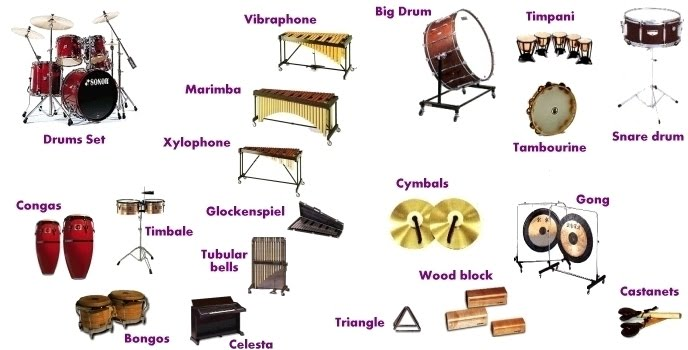

Percussions
A percussion instrument is a musical instrument that is sounded by being struck or scraped by a beater including attached or enclosed beaters or rattles struck, scraped or rubbed by hand or struck against another similar instrument. Excluding zoomusicological instruments and the human voice, the percussion family is believed to include the oldest musical instruments.
The percussion section of an orchestra most commonly contains instruments such as the timpani, snare drum, bass drum, cymbals, triangle and tambourine. However, the section can also contain non-percussive instruments, such as whistles and sirens, or a blown conch shell. Percussive techniques can even be applied to the human body itself, as in body percussion. On the other hand, keyboard instruments, such as the celesta, are not normally part of the percussion section, but keyboard percussion instruments such as the glockenspiel and xylophone (which do not have piano keyboards) are included.
Percussion instruments are most commonly divided into two classes: pitched percussion instruments, which produce notes with an identifiable pitch, and unpitched percussion instruments, which produce notes or sounds in an indefinite pitch.
